Este guia mostra o site pronto, tela por tela, explica para que serve cada parte e pergunta se você aprova. Leva uns 8 minutos. No fim, o guia monta um texto com as suas respostas para você mandar de volta — nada é enviado daqui.
Endereço provisório, e é assim de propósito: ele não aparece em busca do Google e não é para divulgar ainda. O endereço definitivo, em nome próprio, entra quando você aprovar o conteúdo. As telas deste guia são capturas desse mesmo site — se algo aqui parecer estranho, abra lá e confira.
Suas respostas ficam guardadas só neste navegador, para você poder fechar e voltar depois. Não vão para servidor nenhum. O botão Recomeçar, lá no fim, apaga tudo.
1 de 15
A manchete e o carimbo
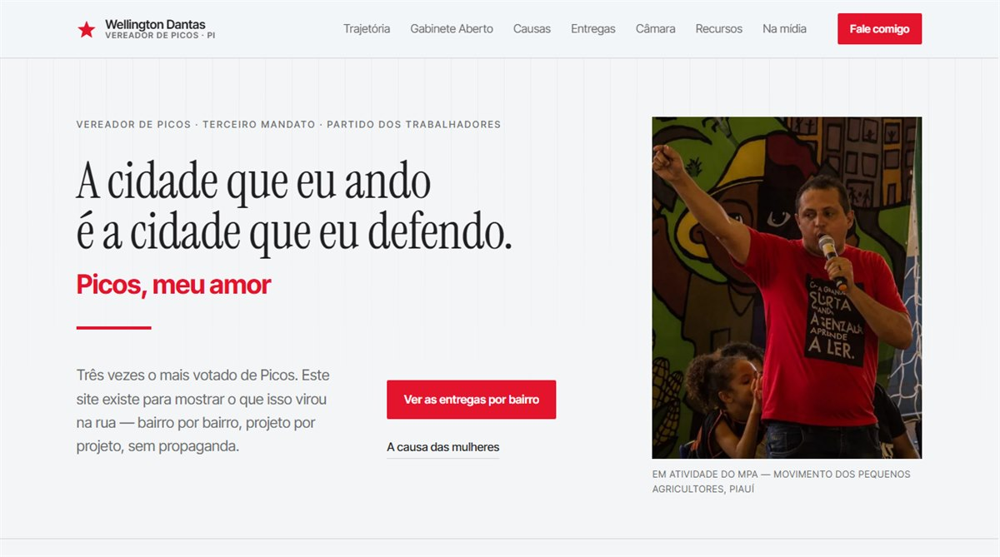
O que é. A primeira tela. A manchete “A cidade que eu ando é a cidade que eu defendo”, com o carimbo “Picos, meu amor” logo abaixo, dentro do mesmo bloco.
Para que serve. É a única frase que todo visitante lê. Ela diz que o mandato é de rua antes de ser de gabinete.
A foto do topo é provisória, gerada por computador, e está marcada como tal na própria página. Ela sai no dia em que chegar a fotografia oficial — e o site não vai ao ar em versão definitiva enquanto ela estiver lá.
2 de 15
Os números
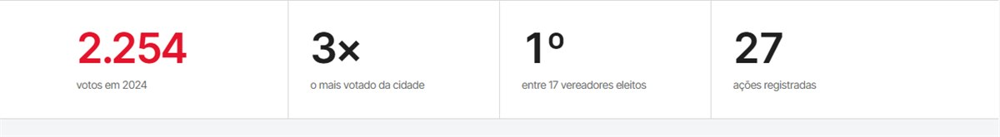
O que é. 2.254 votos · 3× o mais votado · 1º entre 17 eleitos · 27 ações registradas.
Para que serve. Dá tamanho ao mandato em quatro segundos, sem adjetivo.
O que isso te protege. Os três primeiros vêm do TSE. O quarto é a contagem real das ações listadas mais abaixo — se a lista crescer, o número cresce junto. Nenhum deles é estimativa.
3 de 15
A origem
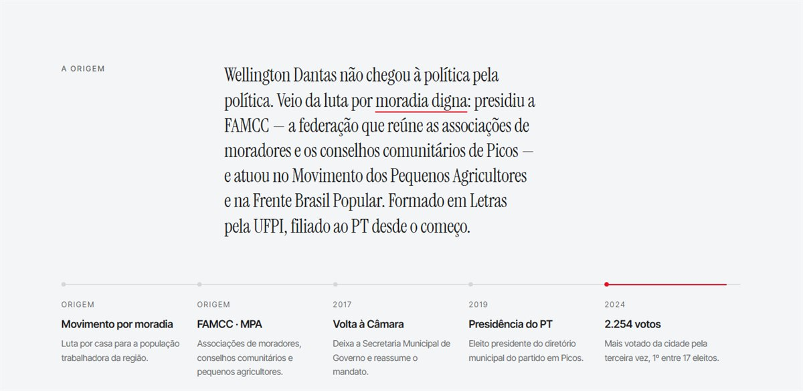
O que é. A linha do tempo — movimento por moradia, FAMCC e MPA, volta à Câmara em 2017, presidência do PT em 2019, 2.254 votos em 2024.
Para que serve. Responde “de onde ele veio” antes que alguém responda por ele.
Pergunta: Falta alguma etapa importante nessa linha?
4 de 15
Mulheres Vivas, Livres e Respeitadas
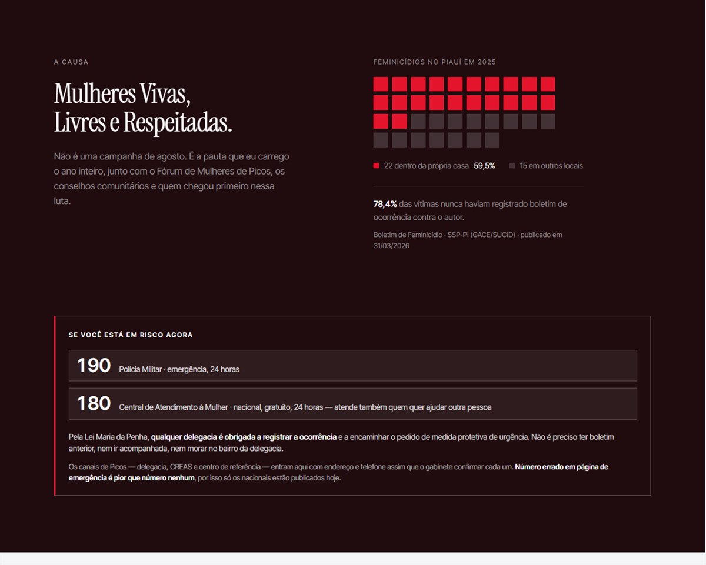
O que é. A bandeira do mandato, com o dado de 2025 no Piauí: 37 feminicídios, 22 dentro da própria casa, e 78,4% das vítimas nunca tinham registrado boletim contra o autor. Os telefones 190 e 180 estão na própria seção.
Para que serve. Mostra a pauta com dado, não com frase de efeito.
O que isso te protege. O site te coloca como articulador, nunca como realizador. A corrida de agosto foi da Prefeitura e da SEMTAS, e o site diz isso.
5 de 15
Entregas, bairro por bairro
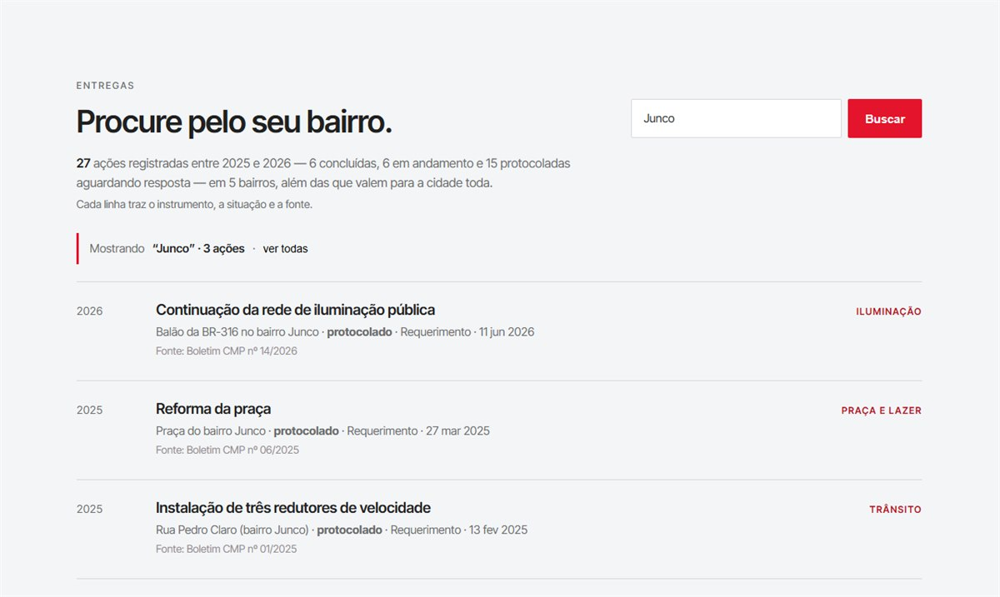
O que é. As 27 ações de 2025 e 2026. Cada linha traz o local, o instrumento (requerimento, projeto de lei, decreto), a situação e a fonte — boletim da Câmara com número, ou o Instagram do mandato. Na tela, a busca por “Junco”.
Para que serve. É o coração do site. Quem quer saber o que foi feito na rua dele digita o nome do bairro e vê.
O que isso te protege. Nada aparece sem fonte. Inclusive o que está só protocolado aparece como protocolado — o site não chama pedido de entrega. Das 27, 6 estão concluídas, 6 em andamento e 15 protocoladas aguardando resposta.
6 de 15
Quando não tem nada
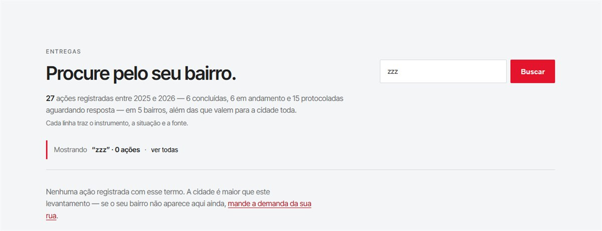
O que é. Quando a busca não acha, o site não fica em branco: diz que a cidade é maior que o levantamento e convida a mandar a demanda da rua.
Para que serve. Transforma a ausência em contato, em vez de virar decepção.
7 de 15
O mapa de Picos
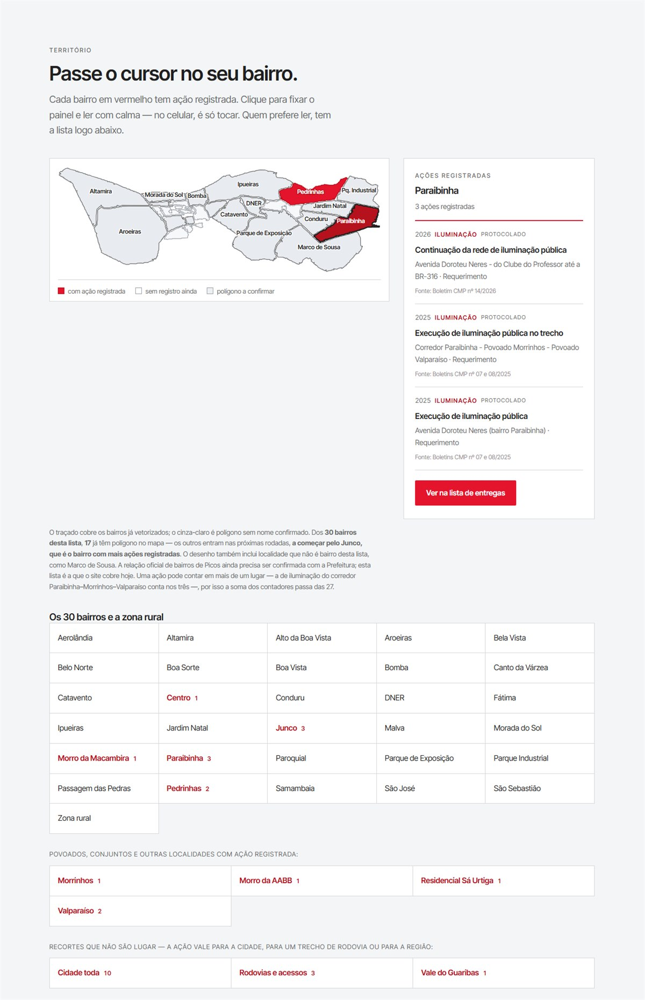
O que é. Mapa dos bairros. Vermelho é bairro com ação registrada; passa o cursor ou toca e o painel mostra o que foi pedido e a fonte.
Para que serve. Quem não sabe o nome técnico do que precisa, aponta no mapa.
O que isso te protege. Bairro só fica vermelho se tiver ação com fonte. O mapa não pinta bairro por simpatia.
Pergunta: A relação oficial de bairros de Picos ainda precisa ser confirmada com a Prefeitura. O gabinete consegue essa lista?
8 de 15
Da reunião de rua até a obra
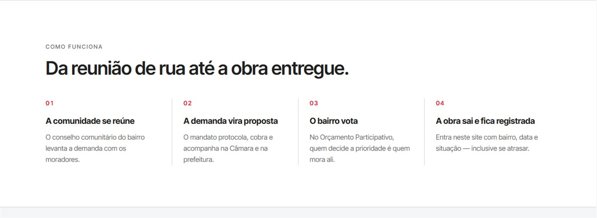
O que é. Os quatro passos — a comunidade se reúne, a demanda vira proposta, o bairro vota no Orçamento Participativo, a obra sai e fica registrada.
Para que serve. Explica o método. É o que separa mandato de favor.
9 de 15
Na Câmara
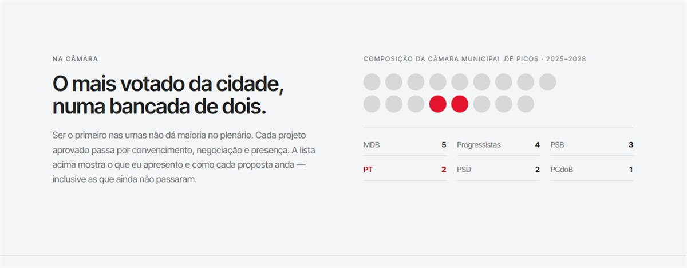
O que é. A composição das 17 cadeiras, com o PT em 2.
Para que serve. Explica por que nem tudo que ele apresenta é aprovado — sem isso, projeto parado parece incompetência.
10 de 15
Recursos que chegam a Picos
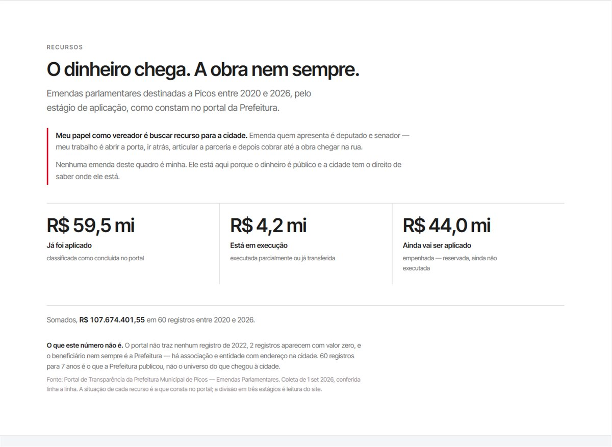
O que é. R$ 107,7 milhões em emendas destinadas ao município entre 2020 e 2026, divididos em já aplicado, em execução e ainda por aplicar. Fonte: portal da Prefeitura, coleta de 1 de setembro de 2026, conferida linha a linha.
Para que serve. Mostra o dinheiro que chega à cidade, sem dizer de quem é o mérito.
O que isso te protege. Esta é a seção mais delicada do site, e ela está escrita para te defender. Vereador não apresenta emenda parlamentar — isso é instrumento de deputado e de senador. O site diz isso com todas as letras e não atribui nenhum centavo a ninguém. Se alguém perguntar “ele está se apropriando de emenda?”, a própria página responde que não.
Pergunta: Você quer manter essa seção? Ela é transparência pura e não gera crédito para o mandato. Tirar não quebra nada.
11 de 15
Na mídia
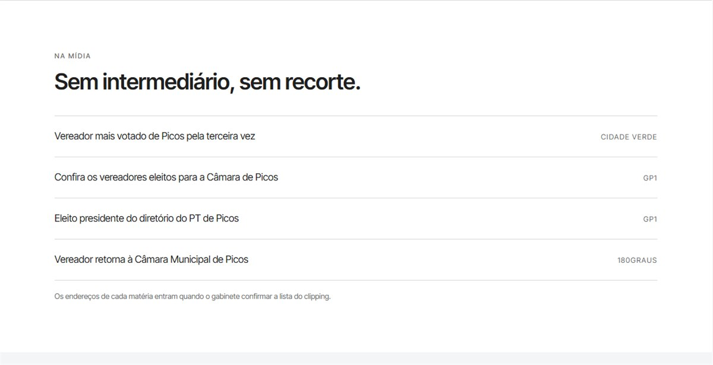
O que é. Quatro matérias sobre o mandato, com o veículo de cada uma.
Para que serve. Mostra que o mandato existe fora do próprio site.
Pergunta: Os endereços das matérias entram quando o gabinete confirmar a lista do clipping. Existe essa lista?
12 de 15
Participe
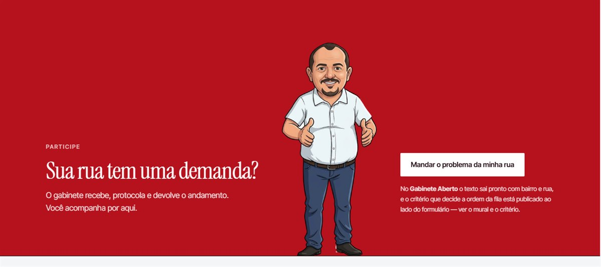
O que é. O convite para mandar a demanda da rua, hoje pelo Instagram do mandato.
Para que serve. É a porta de entrada da demanda. Daqui a pessoa vai para o Gabinete Aberto, onde o texto sai pronto com bairro e rua.
O número de WhatsApp do gabinete e o grupo do bairro entram aqui assim que vocês definirem o canal. Enquanto não define, fica só o Instagram.
13 de 15
A página “Da rua pra Câmara”
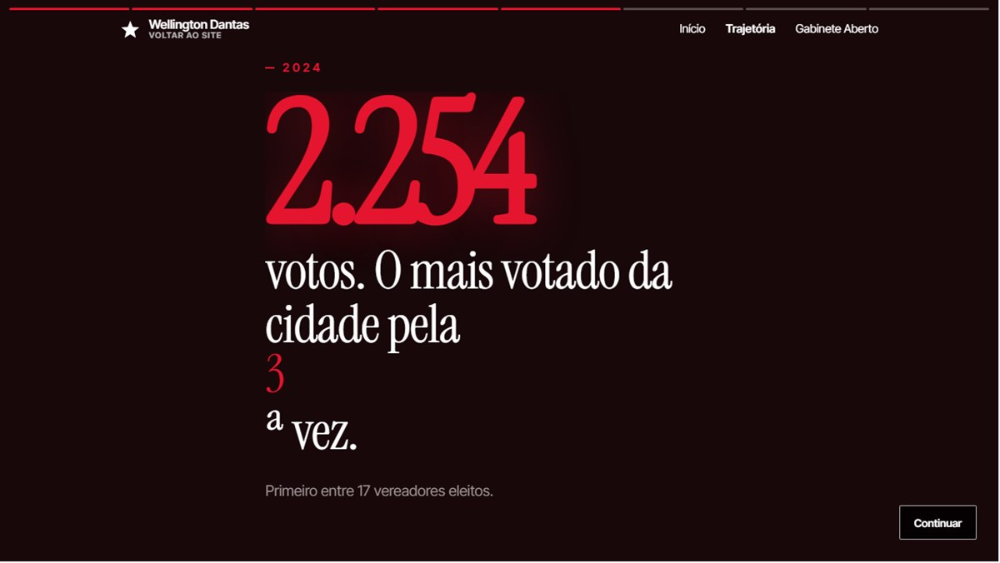
a cena dos votos, com o número contando na tela
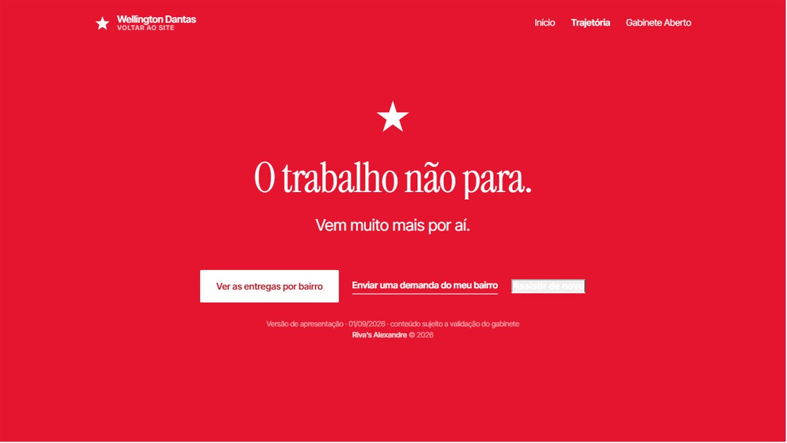
o fecho, com os botões para entregas e para mandar a demanda
O que é. Uma página separada, em tela cheia, que conta a trajetória em oito cenas. Ela passa sozinha, como um story, e para no fim — não fica em laço. Tem botão de pausar, e segurar o dedo pausa.
Para que serve. É a peça para mandar no WhatsApp e no story. Funciona sozinha, sem o resto do site.
O que isso te protege. Se o celular de quem abrir bloquear o script, a página continua legível rolando — não vira tela preta.
14 de 15
O assistente Wellington Dantas.IA
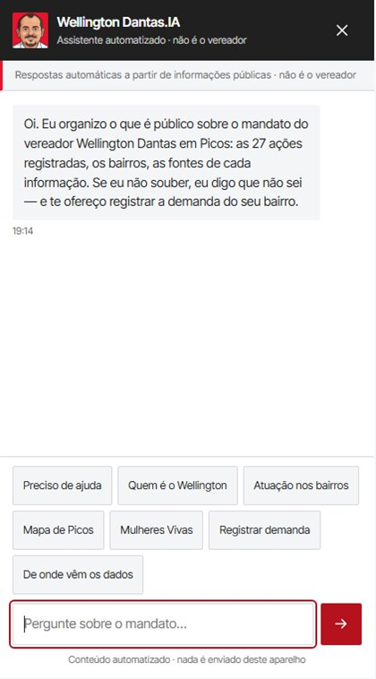
as perguntas prontas, para quem não sabe o que perguntar
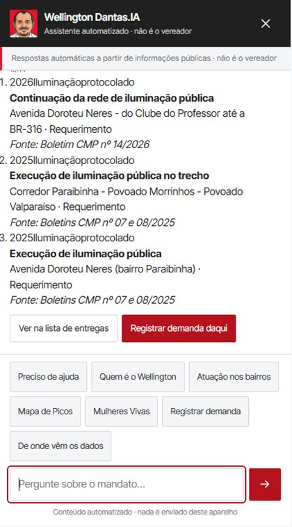
pergunta digitada, resposta com as ações e a fonte de cada uma
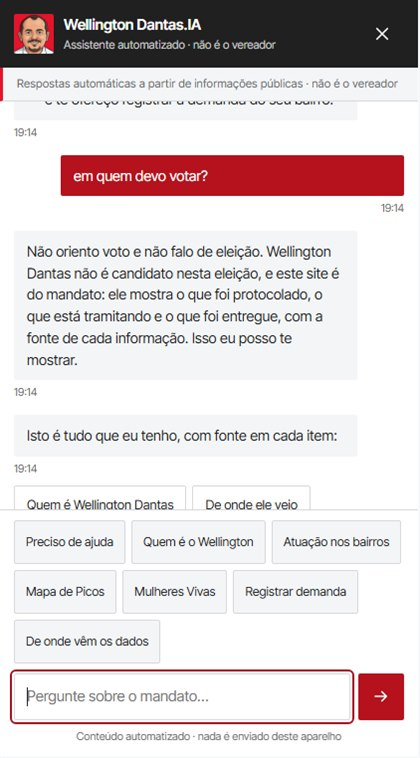
pediram orientação de voto e ele recusa: “Não oriento voto e não falo de eleição”
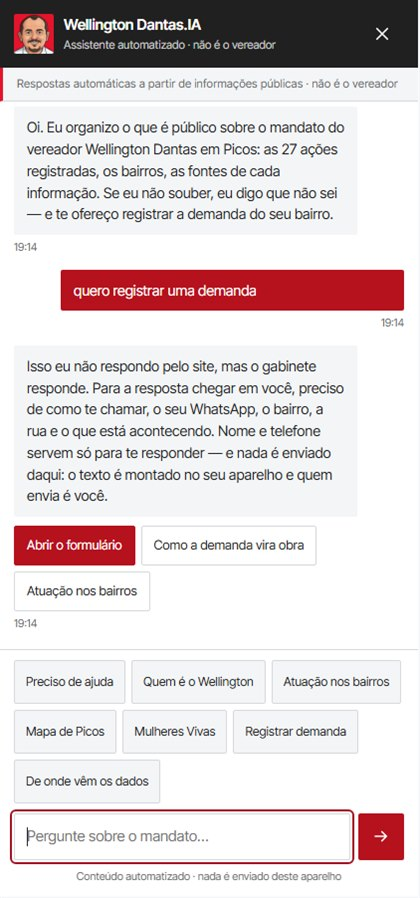
quando não sabe responder, ele vira canal: monta o texto da demanda com bairro e rua, e o morador mesmo envia. Nada sai do aparelho de quem digitou
O que é. Um assistente que responde sobre o mandato. Não é inteligência artificial aberta: ele só responde o que está numa base montada à mão, e toda resposta sai com a fonte. O que ele não sabe, ele diz que não sabe.
Para que serve. Atende quem chega com pergunta em vez de com nome de bairro — e recolhe demanda de quem chega com problema.
O que isso te protege. Ele não fala em seu nome, não pede voto e não inventa número. A recusa de orientação de voto vem antes de qualquer tentativa de responder.
15 de 15
No celular, que é onde a maioria vai ver
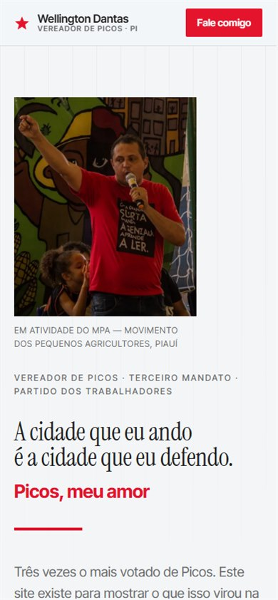
o topo, com o menu completo à vista
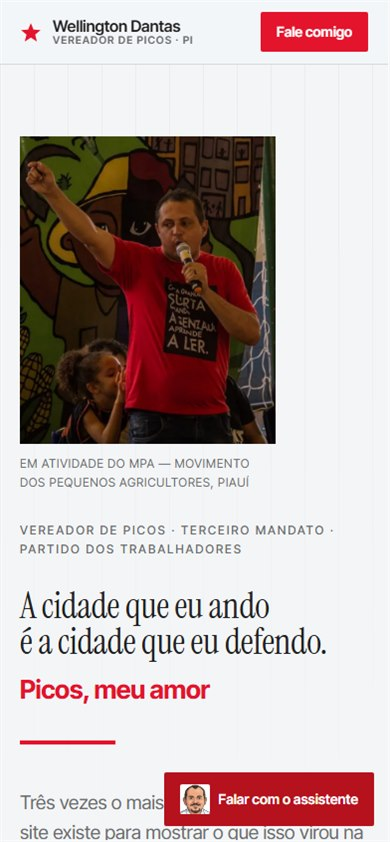
o mapa dos bairros no mesmo aparelho
O que é. O site inteiro em tela de celular. O menu não some, o mapa continua tocável e nada corta.
Para que serve. É a tela em que a maior parte das pessoas vai abrir o link que você mandar no WhatsApp.
O que isso te protege. O menu de celular estava sumindo — a Trajetória e o Gabinete Aberto, que são páginas, ficavam inalcançáveis para quem entrava pelo telefone. Foi corrigido e virou regra automática: o site não publica se o menu sumir de novo.
Por dentro: o que faz isso funcionar
Isto não é uma página bonita: é um sistema. Só que um sistema construído para não ter peça que cobre, quebre ou dependa de terceiro — e é por isso que ele custa zero hoje.
Peça
O que é
Custo
Onde o site moraGitHub Pages
Guarda o código, verifica antes de publicar e serve a página. Publicar é dar um comando; voltar atrás também.
undefined
Como ele é construídoHTML, CSS e JavaScript escritos à mão
Sem framework, sem biblioteca, sem pacote de terceiro. 79 arquivos, 7.671 linhas, zero dependência instalada — nada que possa ser abandonado por quem mantém, invadido pela cadeia de suprimento ou passar a cobrar.
undefined
De onde vem o conteúdoQuatro planilhas no repositório
As 27 ações, os bairros, as emendas e o traçado do mapa. Editar a planilha pela web do GitHub publica o site em cerca de um minuto — sem painel, sem senha, sem banco.
undefined
O que impede erro no arA régua de prova — 105 regras
Roda a cada publicação. Se qualquer regra reprovar, o site não vai ao ar: número sem fonte, promessa sem dono, link morto, imagem pesada, rastreador, emenda atribuída ao vereador. Cada regra nasceu de um defeito real.
undefined
O assistenteRecuperação sobre base curada
Não é inteligência artificial aberta e não usa OpenAI, Google nem nenhuma API. São 17 registros escritos à mão e 22 termos de recusa. Responde instantaneamente e funciona igual para uma pessoa ou para mil.
undefined
Quem visitaNada é medido
Sem Analytics, sem pixel, sem cookie. O preço disso é não saber quantas pessoas entraram; o ganho é não precisar de política de privacidade nem de base legal para tratar dado de ninguém.
undefined
O que isso te protege: nenhuma dessas peças pode aumentar de preço, ser descontinuada ou vazar dado do seu eleitor, porque não há dado sendo guardado e não há serviço de terceiro sendo chamado. O dia em que o GitHub deixar de servir, o site inteiro cabe numa pasta e sobe em qualquer outro lugar em uma tarde.
As ferramentas, e quando cada uma entra
O site já funciona por inteiro sem operar nada. As ferramentas de sistema entram no dia em que o gabinete passar a receber e responder demanda — e a lista abaixo é o que cada momento exige, para vocês verem onde estão hoje e o que falta.
Já está funcionando
você pode abrir agora
Repositório, verificação e publicação
GitHub e GitHub Actions
Endereço provisório
rivascode-ops.github.io/wellington-dantas
Conexão segura (cadeado no navegador)
certificado automático
Geração do conteúdo a partir das planilhas
scripts próprios, em Node
Captura das telas deste guia
script próprio — as imagens se refazem sozinhas quando o site muda
É o que você está vendo. O site já funciona por inteiro, com mapa, mural, assistente e página de trajetória.
Entra quando o conteúdo for aprovado
para ir ao ar em nome próprio
Domínio próprio
registro.br — o registrador oficial brasileiro
E-mail no domínio
ex.: contato@wellingtondantas.com.br
Cartão de compartilhamento
a imagem que aparece quando o link é colado no WhatsApp
Tradução para Libras
ver o bloco de inclusão logo abaixo
Continua sem servidor rodando, sem banco e sem API sendo chamada — o site é um conjunto de arquivos, e é isso que o torna rápido e difícil de quebrar.
Entra quando o gabinete for operar a fila
aí sim vira sistema de atendimento
Banco de dados das demandas
para a fila existir de verdade, com protocolo e histórico
Login e senha do gabinete
quem responde precisa se identificar
Painel do gabinete
ver, responder e mudar a situação de cada demanda
Canal de WhatsApp
três caminhos possíveis, logo abaixo
Backup e prazo de guarda dos dados
obrigação legal a partir daqui
Política de privacidade e canal de exclusão
LGPD — obrigatório assim que houver dado guardado
É aqui que o site passa a GUARDAR dado de cidadão — nome, telefone, endereço. Essa é a fronteira exata entre "site" e "sistema", e é o que obriga política de privacidade de verdade. Antes disso não há o que proteger porque não há o que guardar.
O canal de WhatsApp: três caminhos
É a escolha que mais muda o trabalho do gabinete. Marque a que vocês querem — vai no texto do retorno.
A · Como está hoje — o morador envia
já funciona
O site monta o texto com bairro, rua e contato, e a pessoa envia pelo WhatsApp comum do gabinete. Quem atende responde na mão, como já faz.
A favor: Funciona amanhã, sem contratar nada. Nenhum dado de cidadão fica guardado em lugar nenhum.
Contra: Não há fila nem protocolo real, e o "andamento" depende de alguém anotar. Quando o volume cresce, vira caderno.
B · WhatsApp Business comum + painel do gabinete
o caminho recomendado
O aplicativo gratuito do WhatsApp Business continua sendo o canal, e quem atende registra a demanda num painel simples. A fila passa a existir, com protocolo, situação e histórico.
A favor: É onde o critério de prioridade publicado no site passa a ser cumprível e verificável — deixa de ser promessa e vira processo.
Contra: Alguém do gabinete precisa passar a demanda para o painel. Não é automático.
C · WhatsApp Business Platform — a API oficial da Meta
só com volume alto
A demanda entra direto no sistema sem ninguém transcrever, e a resposta sai automática quando a situação muda.
A favor: Automático de ponta a ponta. Aguenta volume alto sem contratar gente.
Contra: Exige verificação de conta comercial, uma provedora intermediária e aprovação dos modelos de mensagem pela Meta, o que leva semanas. Só compensa com volume alto — e um gabinete de vereador começa com volume baixo.
O que eu recomendo: começar no A, que já está pronto, e passar para o B quando o volume de demanda justificar um painel. O C só compensa com volume alto — e um gabinete de vereador começa com volume baixo.
Inclusão: quem mais precisa do gabinete é quem mais encontra porta fechada
Site de mandato que a pessoa com deficiência não consegue usar exclui exatamente quem depende mais do poder público. O que está na primeira lista já funciona — conferi item por item no código. O que está na segunda ainda não existe, e está separado de propósito: prometer aqui o que não está lá seria o mesmo erro que o site inteiro foi construído para não cometer.
O que já funciona hoje
Funciona com o JavaScript desligado
O conteúdo já vem escrito na página. Quem usa navegador antigo, conexão ruim ou leitor de tela recebe o texto inteiro, sem esperar.
Leitor de tela
Toda imagem tem descrição escrita, os títulos seguem a hierarquia certa, e o resultado de cada filtro e busca é anunciado em voz — quem não enxerga sabe quantos itens sobraram.
Navegação por teclado
Dá para usar o site inteiro sem mouse. Onde o foco está fica visível, e a primeira tecla de cada página pula direto para o conteúdo.
Movimento reduzido
Quem tem enxaqueca, epilepsia fotossensível ou sensibilidade ao movimento — o que inclui muita pessoa autista — pode desligar animação no próprio aparelho, e o site obedece. A página da trajetória entra pausada e não avança sozinha.
Nada toca sozinho com som
Sem áudio automático, sem vídeo em laço, sem pisca-pisca.
Alvo de toque grande
Botões e links com no mínimo 44 pixels de altura, para quem tem tremor, pouca mobilidade fina ou dedo grosso.
Contraste e tamanho
Texto escuro sobre fundo claro, sem cinza sobre cinza, e a página aumenta de tamanho junto com a configuração do celular.
Linguagem simples
Frase curta, palavra do dia a dia, sem jargão de repartição. Serve a quem tem deficiência intelectual e a quem só está com pressa.
O que ainda não existe, e depende de decisão
Tradução para Libras
Um intérprete virtual no canto da tela traduz o texto da página para Língua Brasileira de Sinais. Existe uma ferramenta pública e gratuita do governo federal para isso, o VLibras, feita para ser instalada em sites públicos.
O que trava: Ela carrega de um servidor do governo, e hoje o site não busca nada fora dele — é o que sustenta a frase "não usa cookie e não tem rastreador". Dá para hospedar a ferramenta no próprio site e manter a promessa, e é o que eu recomendo. Precisa da sua decisão porque muda uma regra que está travada.
Vídeo do mandato com legenda e janela de Libras
Todo vídeo publicado no mural sai com legenda embutida, e os principais com janela de intérprete.
O que trava: Depende de o gabinete gravar os vídeos — não é código.
Versão em leitura fácil
Uma segunda versão das páginas principais, com frases ainda mais curtas e um conceito por parágrafo, para pessoas com deficiência intelectual.
O que trava: É trabalho de escrita, não de programação. Entra se vocês quiserem.
Pergunta: vocês querem a tradução em Libras no site?
O que o site deliberadamente não faz
Não pede voto e não menciona eleição — você não é candidato agora, e o site respeita isso.
Não atribui emenda parlamentar a você.
Não publica número que não tenha fonte. Onde faltou dado, o site diz que faltou.
Não usa cookie, não tem rastreador e não manda nada para Google, Meta ou qualquer outro. Quem visita não é seguido.
Não chama de entrega o que ainda é pedido.
Isto é informação, não escolha — não tem botão de aprovar.
O que ainda depende de vocês
São decisões que só o gabinete toma. Marque o que já tem resposta e escreva ao lado — vai junto no texto do retorno.
Pode publicar essa frase? Sem o aval, ela sai do ar. Promessa publicada sem dono vira cobrança contra quem não a fez.
Hoje o assistente entrega um código à pessoa, e ele vai na primeira linha do texto que ela envia. Para valer como protocolo de verdade, o gabinete precisa adotá-lo. Adota?
WhatsApp do gabinete: qual número, e quem atende?
Para completar o mapa e parar de dizer que a lista ainda não está confirmada.
Endereços das matérias que já saíram sobre o mandato.
Fotografia, e só fotografia. Enquanto não chega, o topo do site fica com uma imagem provisória marcada como tal — e a versão definitiva não vai ao ar.
O mural tem espaço para foto em cada registro e hoje está vazio. As 6 concluídas primeiro — entrega sem foto é entrega que ninguém vê.
A foto da tribuna e a foto da estrada precisam de autorização de quem fotografou.
Seu retorno
O guia monta o texto abaixo com tudo que você respondeu. Copie e mande de volta pelo WhatsApp — nada sai deste aparelho sozinho.